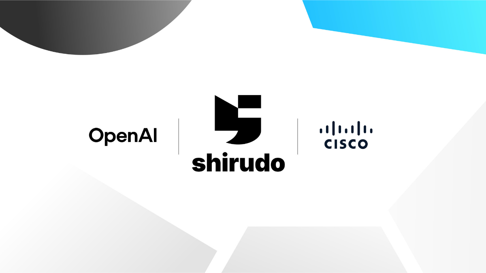
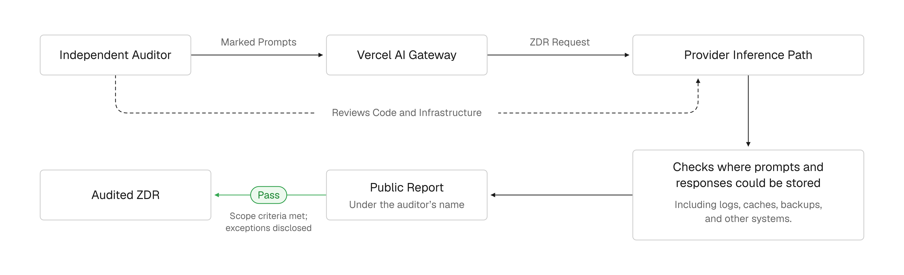
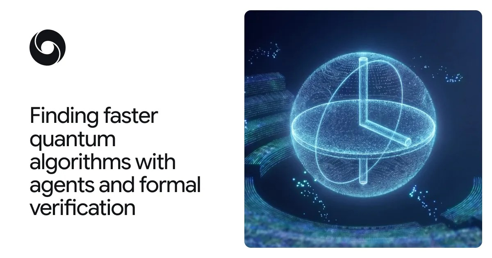

AI Intelligence Daily · 2026-11-24（周二）
统计窗口：主窗 2026-11-23 08:00 → 2026-11-24 08:00（上海 / Asia/Shanghai）。因 Daily 11-22 / 11-23 与 11-21 22:48 之后的快讯均未出站，本报同时补收 11-21 08:00 之后的发船，并吸收 11-21 日间 SILENT 快讯已记下、原计划交 Daily 11-22 的 near-miss。事实与判断分区 · 国内/国际双轨。· 已在售 Desktop/CLI：主窗能力向变化是 **Claude Ship**（/ship、PR Steward、Claude Approvals，beta，随 Claude Code CLI/桌面滚动）与 **OpenCode 2.4.0**（内置桌面浏览器 + Automations；同日另有 2.4.1）。补收 **Factory CLI+Desktop 1.17.0**（官方说明日期 11-21：Skills 浏览器操作、按用户组追加 MCP；快讯期间 npm 已出但官方 json 当时 404）及 **1.18.0**（11-23，会话草稿链接、个人 API 密钥随所有者角色生效等）。点版本：Kimi Code Desktop **1.4.3** / CLI **2.7.3**（MCP 浏览器登录授权按钮等补丁；1.5.0 仍为 canary）· Qwen Code / Desktop **0.28.4** · Claude Code latest **2.1.331** · Antigravity CLI **1.5.15**（1.5.14 属 11-21 下午，官方文档 changelog 未必同步登出，以 GH Release 为准）。持平或仅旁支：Copilot CLI latest 仍 **1.0.114**（prerelease 已至 1.0.115-8）· MiniMax CLI 仍 0.7.9，官方 changelog 仍顶 Desktop 3.1.15–3.1.16，不把 CDN 3.1.17 写成已发船 · Qoder 官方 changelog 仍顶 **0.5.17** · 千问办公客户端仍 **2.1.0** · Devin Desktop changelog 顶仍 **v3.14.30833** · VS Code 稳定版仍 **1.147.0** · MCP servers 仍 **v2.5.0** · dsh latest 仍 **0.2.2-rc.5**（另见 0.2.3-alpha，不以预发写成已发船）· Cursor changelog 仍顶 Nov 6 Voice Chat · 讯飞 WinWork 与小艺 Work 本轮未见新的官方顶条。**Codex latest 0.172.0** 的 GitHub published 时间为 2026-11-24T00:03:55Z（08:03:55 CST）、npm 为 00:09:39Z，晚于本报 08:00 窗，只作窗后脚注，不计入本窗发船。★（约 08:16 CST，相对 Daily 11-21 约 08:16 CST，约 72 小时）：deepseek-harness **286,065**（+1,367）· agent-desktop **26,346**（+582）· opencode **228,807**（+555）· agent-browser **53,616**（+535）· chrome-devtools-mcp **59,022**（+484）· chat-demo **5,344**（+223）· servers **92,195**（+62）· kimi-code **8,283**（+10）。Hy4 正式仓 ★**76**（新仓，无 11-21 基线）。
今日一句话判断
今天真正把行业往前推的，不是又一个参数表，而是几条同时出现的「谁来批准、数据留在哪、系统在补丁到来前怎么活」的答案。 NVIDIA 董事会在继续调查的前提下恢复黄仁勋的总裁、CEO 和董事职务；Anthropic 把拉请求的审查、修复和按仓库策略批准写成 Claude Ship；OpenAI 与 Cisco 把「Agent 生成、人批准、签名后挂上的 eBPF 护盾」开源为 Shirudo；OpenRouter 则用下架三家提供商、撤掉 125 个 ZDR 端点的方式，把推理层「零保留」从自我声明推进到可被打穿的现实。国内一侧，智谱用 Loop Transformer 发布 GLM-5.4，并先向 Coding Plan 开放。不要把 NVIDIA 的复职写成调查已经结束，也不要把 Novita 对 MiniMax 请求被转发的说明，直接写成 MiniMax 官方已经承认「阅读了客户提示词」。
专栏一｜新闻
本栏结构：
- 国际产业头条：NVIDIA 董事会立即恢复黄仁勋担任总裁、CEO 和董事（UPDATE 241）
- 国际产品头条：Anthropic 发布 Claude Ship（beta）：审查、修复，并按仓库策略批准 PR（NEW 287）
- 国际安全中栏：OpenAI 与 Cisco 开源 Shirudo，用可签名的 eBPF 护盾在不停机的情况下保护 Linux（NEW 288）
- 国际安全中栏：OpenRouter 披露推理提供商数据处理事件并下架 / 撤销 ZDR（NEW 289），Vercel 同步推出 Audited ZDR（NEW 290）
- 国内头条：智谱发布 GLM-5.4，首款 Loop Transformer 旗舰，Coding Plan 已开放、API 待安全评估（NEW 291）
- 国际中栏：Claude Enterprise Frontier Safeguards 与 ZDR 兼容的方案进入公开测试（NEW 292）
- 国际中栏：Claude 把连接器与 Skill 收进统一的 Plugins 页（NEW 293）
- 国际中栏：OpenCode 2.4.0 内置桌面浏览器，并允许按日程或 MCP 事件创建自动化（NEW 294）
- 国际中栏：Replit 宣布 Resonate 加入，补上可恢复的 Agent 执行层（NEW 295）
- 国际短栏：DeepMind 用 Gemini 4 Agent 团队改进量子线路并在 Lean 中验证
- 短讯：Factory 1.17.0 / 1.18.0 与 Google Chat、Kimi 1.4.3、Qoder 限时隐身模型 HungerG、ChatGPT 聊天标签接入 GPT-6.2 Sol、官方账号预告 GPT-5.6 将于 12-23 退役
排序依据：重要度 → 与两条主线的相关性 → 时效。复职改写的是算力供给一侧的治理不确定性；Ship、Shirudo 和 ZDR 审计则分别碰到工作流批准、运行时防护和推理委托中的 Trust；GLM-5.4 是国内旗舰在架构和 Coding 产品面上的实质发船。
1. NVIDIA 董事会立即恢复黄仁勋担任总裁、CEO 和董事，调查仍将进行到底
S · UPDATE · 国际 · I/J · 主窗 · watchlist **241** · 非产品发船
发生时间：NVIDIA 新闻室稿标注 November 23, 2026；投资者关系新闻稿路径同日。本报未见更精确到分钟的官方时间戳。HN 首页该条 created_at 为 2026-11-23T14:00:18Z（22:00:18 CST）。配套 8-K 文件名为 nvda-20261122，事件日可能早于新闻稿日期，本报不以文件名替代新闻稿日。
发生了什么
NVIDIA 宣布，董事会一致投票，立即恢复 Jensen Huang 担任总裁、首席执行官和董事会成员。董事长 Harvey C. Jones 表示，董事会在与其进行一系列讨论和会议后，对其坦诚和领导能力感到满意；过程中董事会还听取了美国政府高层的意见，并据此认为复职「不构成国家安全风险」。Colette Kress 在代理 CEO 期间的工作得到感谢，她将继续担任首席财务官。Jones 留任董事长。
稿件同时写明：此前因有报道称 Huang 成为外国情报活动的目标，董事会已成立全部由独立董事组成的委员会并聘请独立律师，该调查将进行到底；Huang 表示支持并承诺配合。董事会还新成立全部由独立董事组成的国家安全与出口管制委员会，正在聘请有国家安全经验的律师；公司开始物色新的首席合规官（Chief Compliance Officer），向提名与公司治理委员会汇报。
我的判断
判断：这是 watchlist 241 自 11-12 快讯以来最重要的官方后续，而且是方向相反的后续。Daily 11-18 曾根据董事会当时的公开表述，记下「辞职且不恢复职务」；今天的新闻稿把这句话改写成了「已经恢复」。它不是产品或模型发布，但会立刻改变市场和供应链如何阅读 NVIDIA 的治理与出口合规风险。更值得单独记下的是：复职和调查被放在同一份稿里——董事会接受他回来领导公司，同时坚持把外国情报相关调查进行到底，并补上出口合规委员会和首席合规官。本报不把「美国政府高层意见」具体到未具名的人或机构，也不把复职理解成调查已经结案。
未来影响
短期看，算力采购和合作叙事会从「领导层空窗」转回「创始人重新在位，但合规架构被加厚」。长期看，真正要跟踪的是调查结论、出口管制委员会的权限，以及定期披露里合规与供应安排会不会被写得更硬，而不是复职日的股价评论。
对智能体互联网
无直接协议或身份标准。若后续披露把出口管制、供应链或政府意见写成更具体的约束，那会变成产业治理信号，而不是今天的互操作设计。
对 Work / Agent 引擎
无直接 Harness 发船。启示只是：把关键基础设施供应商的治理事件和产品能力分开记账，不要因为领导层变化就改运行时路线。
值得进一步做什么
- 对照 8-K 与新闻稿，记下复职生效日、调查范围和新增委员会职责。
- 继续以公司公告为准，不把未具名的政府意见写成已公开的政策结论。
- 暂不必因此改引擎设计。
真实来源
- 主来源：https://nvidianews.nvidia.com/news/nvidia-board-reinstates-jensen-huang-as-president-ceo-and-board-director
- 补充：https://investor.nvidia.com/news/press-release-details/2026/NVIDIA-Board-Reinstates-Jensen-Huang-as-President-CEO-and-Board-Director/
- 社区热度：https://news.ycombinator.com/item?id=50611576
2. Anthropic 发布 Claude Ship：Claude 可以审查、修复，并按团队策略批准拉取请求
S · NEW · 国际 · B/C/F · 主窗 · watchlist **287** · Desktop/CLI 能力，beta
发生时间：官方文章日期 November 23, 2026。@ClaudeDevs 主帖 2026-11-23T20:13:04Z（11-24 04:13:04 CST），随后两条说明 /ship 正在 CLI 与桌面应用滚动，以及 Team / Enterprise 管理员可对整个仓库开启。
发生了什么
Anthropic 宣布 Claude Ship 今日以 beta 提供。它由已经正式可用的 Code Review，以及两个新的 beta Agent 组成：PR Steward 和 Claude Approvals。目标是让拉取请求在审查、修复和批准这几步上，跟上 Agent 写代码的速度，同时由团队决定它在哪里运行、哪些改动必须由人点头。
Code Review 会从多个角度审查 PR、交叉核验发现并分类后发到请求上；官方自称，在 Claude Code 团队自己的流程里，6 月至 9 月合并的 PR 增加一倍以上，回退比例下降超过 40%，这是内部观察，不是第三方审计。PR Steward 负责让 PR 保持可合并：处理失败的 CI、冲突和来自 Code Review、其他工具或同事的意见，但被设计为不批准、不合并；每次推送后会说明改了什么、如何撤销，开发者可用 @claude 引导或 @claude stop 让它停下。Claude Approvals 则读取仓库里的批准策略文件，表现得像「更聪明的 CODEOWNERS」：常规改动可按策略自动批准，特定情形仍要求人签核；官方建议多数客户先开观察模式，再把分支保护改成需要它的放行。
开发者更新 Claude Code 后可运行 /ship。Team 和 Enterprise 管理员可以对整个仓库开启，使它在团队 PR 上运行、不必每次输入 /ship。符合条件的 Claude Enterprise 组织可在领取后 30 天内使用至少 1 万美元 的 Claude Ship 积分，领取截止 2027 年 1 月 15 日，条款另计。
我的判断
判断：这是当天与 Work / Agent 引擎最直接相关的产品发船。它把「写代码的 Agent」和「过门的 Agent」拆开，并且把批准权写成仓库里的策略文件，而不是聊天里的口头同意。PR Steward 明确不批准、不合并，说明 Anthropic 至少在产品叙事上，不想把「修 CI」和「放行合并」交给同一个角色。这比再做一个会开 PR 的编码助手，更接近可治理的工作流。积分促销是采用加速器，不是能力本身。
未来影响
若仓库策略批准成为默认门禁，工程组织会把 CODEOWNERS、分类器和审查深度写进同一份可版本管理的政策。下一步要看误放行、观察模式转强制的条件，以及它与现有分支保护、身份和审计日志如何对齐。竞品若只提供「Agent 提交 PR」，会显得少了一层可问责的批准面。
对智能体互联网
无新的跨厂协议。有限启示是：跨 Agent 协作时，执行者、修复者和批准者不应默认是同一个身份；批准规则最好是可检查、可版本化的对象，而不是一次对话里的临时同意。
对 Work / Agent 引擎
直接相关。可对照：把审查 / 修复 / 批准分成不同 Agent；修复者默认没有合并权；批准策略作为仓库文件，先观察再强制；人可以用评论接管或叫停。自建 Harness 若只记录「Agent 开了 PR」，还没有记下是谁按哪条规则放行的，已经落后于这条产品定义。
值得进一步做什么
- 阅读官方文章与 Claude Code 更新，核
/ship的权限范围、策略文件格式和观察模式默认行为。 - 把「修复 Agent 不得合并」写进内部工作流对照。
- 关注 Enterprise 积分条款和团队仓库默认开启后的审计能力。
配图
见图 1（官方文章页 Open Graph 配图，来源页 Introducing Claude Ship）。
真实来源
- 主来源：https://claude.com/resources/articles/introducing-claude-ship
- 补充：https://x.com/ClaudeDevs/status/2124959436640858475
3. OpenAI 与 Cisco 开源 Shirudo：让 Agent 为运行中的 Linux 系统编写可签名的 eBPF 护盾
强A · NEW · 国际 · G/C/H · 主窗 · watchlist **288** · 开源运行时，非 Desktop 发船
发生时间：OpenAI 官方文章标注 November 23, 2026；News RSS pubDate 为 2026-11-23T21:20:00Z（11-24 05:20 CST）。@OpenAI 主帖 21:37:07Z（05:37:07 CST）。Cisco 新闻室稿同日，署地圣何塞。
发生了什么
OpenAI 与 Cisco 联合发布开源项目 Shirudo（日文「盾」）。它用 eBPF 在操作系统内核的特定点运行小程序，以便在正式补丁还不能全面铺开时，给正在运行的 Linux 系统加上临时护盾，而不必重启服务。官方把能力概括为四件事：在线防护并可先观察再强制；让 Agent 获得可编程接口去调查漏洞、编写护盾并用攻击和真实负载验证；护盾加载前需加密签名，并经过 Linux eBPF 验证器与内核安全控制；以及用 TPM 留下防护被加载或移除的可验证记录。
OpenAI 写道，在受控测试中，一道由 Codex 生成的护盾在无需重启的情况下，挡住了针对正在运行的 Elasticsearch 服务的 Java4Shell 利用尝试。Cisco 新闻稿还提到对 Java4Shell 和一处 PHP 漏洞的测试。两边都强调：安全团队决定什么被部署。开源仓库为 https://github.com/shirudo-dev/shirudo 。本报成稿时该仓仍接近发布之初，不以星标判断影响力。
我的判断
判断：这是把「Agent 写防护」放到内核可观察界面上的一次认真尝试，而不是又一份安全倡议文。它重要的地方在于分工：Agent 可以提议和验证护盾，但加载需要签名、验证器和人的批准，并且留下硬件支持的记录。这与 Claude Ship 的「修复者不能自己合并」是同一类结构，只是对象从 Git 仓库换成了运行中的主机。演示仍是受控测试，不能外推成生产环境已经可以自动给内核挂补丁。
未来影响
若这条路径能在真实发行版和常用服务上站稳，安全运营会多出一种「补丁窗口中的临时控制」，Agent 也会更经常被要求输出可验证、可撤销的防护，而不是一段建议。反过来，eBPF 与签名链若被绕过或误阻断合法流量，伤害会来得很快。值得把它看成运行时安全原语的候选，而不是已经完成的 Agent 自卫操作系统。
对智能体互联网
无新的发现或身份协议。启示是：让 Agent 作用于共享基础设施时，调用权、加载权和事后证明需要分开；TPM 记录提供了一种可审计的委托痕迹，但仍是主机内的证明，不是跨组织的 Trust 标准。
对 Work / Agent 引擎
直接相关。可对照：把高风险动作做成「生成 → 验证 → 人批准 → 签名加载 → 可撤销」的闭环；为运行中的系统保留不停机的控制面；以及不要让同一个循环既写护盾又按下去。Sandbox 和宿主机策略讨论，迟早会碰到这类内核级工具。
值得进一步做什么
- 阅读 OpenAI / Cisco 稿与
shirudo-dev/shirudo文档，核护盾生命周期、签名和批准界面。 - 关注它是否出现可复现的演示和发行版支持范围。
- 不要在未理解隔离范围前，把它接到自有 Runtime。
配图
见图 2（Cisco 新闻室该稿配图，来源页 Cisco and OpenAI Launch Shirudo）。OpenAI 文首合作 Logo 图不单独使用。

真实来源
- 主来源：https://openai.com/index/introducing-shirudo
- 补充：https://newsroom.cisco.com/c/r/newsroom/en/us/a/y2026/m11/cisco-and-openai-launch-shirudo-a-new-project-to-safeguard-agentic-ai.html
- 仓库：https://github.com/shirudo-dev/shirudo
- 官方 X：https://x.com/OpenAI/status/2124980590717911527
4. OpenRouter 下架三家推理提供商并撤销 125 个 ZDR 端点；Novita 确认部分 MiniMax 请求曾被转发到官方 API
强A · NEW · 国际 / 双边 · G/F/E · 补收（11-22）· watchlist **289** · 11-21 快讯 near-miss 的官方落地
发生时间：OpenRouter 公告页标注 11/22/2026。@OpenRouter 主帖 2026-11-22T01:32:38Z（09:32:38 CST）。Novita 隐私说明日期 November 22, 2026。11-21 12:57 快讯已记下社区对「MiniMax 提示词可能被第三方读取」的转述，当时没有提供商官方页，交 Daily 11-22；本报按官方稿补收。
发生了什么
OpenRouter 写道，安全研究者报告部分推理提供商出现数据被访问，或有证据表明其数据政策未被遵守。公告强调：测试未显示 OpenRouter 自身遭到入侵或未授权访问。公司采取的行动包括：根据调查结果下架三家提供商；将 125 个端点移出 Zero Data Retention（ZDR）资格（含被点名的提供商，以及作为预防措施撤下的端点）；并通知所有可能受影响的客户。后续工作包括把研究者的检测方法做成持续检查、核验请求是否被转发到第三方，以及在恢复任何 ZDR 资格前要求适当保证和验证。公告感谢 Dragos 的报告，并列出现已收到的提供商说明：Atlas Cloud、Novita、Phala，以及 Together 关于 2026 年 6 至 7 月请求提示词泄漏的说明。它同时写明：并非所有受影响提供商都已公开发文，但即无公开页，OpenRouter 也已通知受影响用户。
Novita 的说明更具体：独立研究者报告后，其复核确认部分 MiniMax 请求被转发到 MiniMax 官方 API，而不是在 Novita 自有基础设施上处理。受影响窗口为 2026-05-28 至 2026-11-11，涵盖直接调用 Novita 以及经 OpenRouter 转到 Novita 的请求。Novita 称这是一条本应只用于特定客户的转发路径，被错误地扩大了范围；已暂停受影响模型。研究者观察到测试请求中嵌入的 URL / 主机名被访问，未见 AWS 测试密钥标记被使用；访问模式「暗示可能涉及自动内容审查」。Novita 写明正与 MiniMax 核实这一判断及数据处置，并建议若提示词中含有真实凭证或密钥，应撤销或轮换。本报未见 MiniMax 官方就同一事件发表的公开说明，不把 Novita 的「暗示」写成 MiniMax 已确认的事实。
我的判断
判断：11-21 快讯里那封被转述的客户邮件，今天有了第一方公告，性质从「社区传闻」变成了路由和托管层的治理事件。真正重要的不是 OpenRouter 有没有被攻破——它自己否定了这一点——而是「选一个声称 ZDR 的端点」并不能保证提示词只留在你以为的那台机器上。Novita 把问题写成配置扩大了转发范围，这说明风险出在提供商之间的实际数据路径，而不是模型卡片上的隐私承诺。Together、Atlas、Phala 被并列，说明这不是单一事故。
未来影响
代理层、ZDR 标签和「官方 API / 转售 API」的披露会成为采购清单上的硬项。企业若把密钥、内部 URL 或客户数据放进提示词，现在有了更具体的轮换理由。接下来要看被下架提供商是否公布完整说明、MiniMax 是否正式回应，以及 Dragos 报告是否公开足够的方法细节。
对智能体互联网
直接相关。Agent 把任务交给外部模型端点时，Trust 不能停在「平台宣称零保留」。需要能问：请求实际落到哪一家、是否允许再转发、ZDR 如何被验证。发现和路由若只展示模型名，不展示数据处理路径，就会把委托做成盲委托。
对 Work / Agent 引擎
直接相关。默认假设应改为：提示词可能经过未被合同覆盖的第三方。密钥、回调 URL 和内部仓库地址不应进入未核验路径的上下文；连接器配置里最好能记下实际提供商，而不只是路由品牌。
值得进一步做什么
- 核对本组织是否在 5-28 至 11-11 经 Novita 或 OpenRouter 调用 MiniMax，并按需轮换提示词中出现过的秘密。
- 跟踪 OpenRouter 列表中尚未公开说明的提供商，以及 MiniMax 是否出现第一方说明。
- 把「ZDR 资格」和「实际转发路径」拆开，写进路由选型清单。
真实来源
- 主来源：https://openrouter.ai/blog/announcements/data-processing-incidents-on-inference-providers/
- 补充：https://novita.ai/blog/minimax-requests-privacy-notice/
- 官方 X：https://x.com/OpenRouter/status/2124315081899200715
5. Vercel 为 AI Gateway 推出 Audited ZDR：独立机构对照源代码与实时流量验证「零保留」
A · NEW · 国际 · G/F/E · 主窗 · watchlist **290**
发生时间：官方博文标注 November 23, 2026。@vercel 主帖 2026-11-23T13:34:51Z（21:34:51 CST）。
发生了什么
Vercel 宣布在 AI Gateway 上线 Audited ZDR。提供商只有在独立安全公司对照其代码、基础设施和实时流量验证零保留声明，并公布报告之后，才能获得这一标签。首批审计伙伴为 Baseten、Modal 和 Wafer，报告预期在 2026 年 12 月 8 日前给出。博文把此前的团队级 ZDR 路由和 Vercel 自身的 ISO/IEC 42001:2023 认证视为铺垫，并明确：仅靠合同和自我声明，不足以回答提示词是否进入调试日志、限流是否把 ZDR 流量打到非 ZDR 端点、支持人员工具会不会看到客户提示词。Changelog 还提到金丝雀式审计：向路径中投放唯一 URL，检测提示词内容是否在推理路径之外被访问。
我的判断
判断：这是对上一则事件的产品级回应，而且来得很快。它并不证明哪个提供商已经干净，只是把「谁来验证 ZDR」从提供商自己改成了可公开的第三方审计和金丝雀探测。12 月 8 日的首批报告才是这则新闻的真正检验点。不宜把标签设计本身写成已经解决了 OpenRouter 披露的转发问题。
未来影响
推理网关可能会分成「自称 ZDR」和「被审计的 ZDR」两档。若报告按期公开且方法站得住，其他代理层很难再只贴一个徽章。
对智能体互联网
与 289 合看：互操作层若要做可信路由，需要可验证的数据处理声明，而不是模型目录上的一句话。
对 Work / Agent 引擎
可把「端点是否经过独立 ZDR 审计」列入外部模型调用策略。在首批报告出来前，只作观察。
值得进一步做什么
- 等待 12 月 8 日前的首批审计报告，看方法是否覆盖转发和日志路径。
- 对照 OpenRouter 撤销名单，避免把两个系统的标签混为一谈。
配图
见图 3（官方博文流程图，来源页 Introducing Audited ZDR on AI Gateway）。

真实来源
- 主来源：https://vercel.com/blog/introducing-audited-zdr-on-ai-gateway
- 官方 X：https://x.com/vercel/status/2124859223783727106
6. 智谱发布 GLM-5.4：首款 Loop Transformer 旗舰，Coding Plan 已开放，API 尚待安全评估
强A · NEW · 国内 / 双边 · A/H/B · 主窗 · watchlist **291**
发生时间：官方博客日期 2026-11-23。文档页同步说明 Coding Plan 已向全部用户开放。@zcode_ai 2026-11-23T14:25:59Z（22:25:59 CST） 宣布 GLM-5.4 已在 ZCode 上线；@qoder_ai_ide 13:55:11Z（21:55:11 CST） 宣布 Qoder 全产品 Day-0 接入。HN 讨论串 created_at 10:06:43Z（18:06:43 CST）。
发生了什么
智谱发布 GLM-5.4，称这是其第一款建立在 Loop Transformer 架构上的旗舰模型，并把方向称为「泛 Coding」：在工具调用环境中，用代码去完成视频、游戏、3D 和机械设计等更广的任务。官方技术说明写明：它将 GLM-5 基座中的 28 层循环执行 2 次；为了在约 750B 规模上平衡效果与部署成本，对循环更新做了门控等改动。博客称其智能水平可与 2T–3T 参数量级的模型相比，同时承认模型容易进入过长的「马拉松式思考」，并说这种长时间反思会继续提高准确率。这些都是官方自评，本报不把它写成已被独立复现的基准结论。
产品侧：GLM-5.4 已向 GLM Coding Plan 全部用户开放；有周限额的用户，使用该模型的额度提升至 GLM-5.3 的 1.5 倍。模型 API 将在完成安全评估后开放。文档列出输入模态为视频、图像、文本和文件，输出为文本，上下文窗口 1M，最大输出 128K。官方举出用前端代码绘制画面、用几何与着色器做 3D、以及经 FreeCAD / Blender 做机械臂可视化等创作者案例，均属展示，不是评测集。
我的判断
判断：这是本补收窗口里最重要的国内模型发船。它的看点不在又一次「全面领先」的表述，而在两条可核验的产品事实：架构上明确是对已有基座做循环深度，而不是从头预训练一个共享权重的巨模；产品上先走 Coding Plan，API 还要过安全评估。后者说明智谱至少在官方文本里，把开放权重或开放接口和安全评估分开了。Loop Transformer 与近日出现的其他「少参数、多循环」叙事（包括此前已露面、本报未单列的 Inkling 2 Mini）是同一技术方向上的不同实现，不要写成只有智谱在做。
未来影响
若循环深度能在真实仓库和长程任务里稳定转化为质量，国内 Coding Agent 会更多比「同样参数能想几轮」，而不是只比总参数。API 未开，意味着短期内影响更集中在智谱自己的 Coding Plan、ZCode 和已宣布 Day-0 的 Qoder，而不是广泛的第三方 Harness。
对智能体互联网
无新协议。若 API 开放时带上工具调用与多模态输入，才会进入可被外部 Agent 发现和调用的阶段。
对 Work / Agent 引擎
直接相关。可关注：长程任务中的「马拉松式思考」如何被预算和中断策略约束；视觉输入如何进入现有工具循环；以及在 API 尚未开放时，产品通道（Coding Plan / ZCode / Qoder）与自建 Runtime 的边界。
值得进一步做什么
- 精读官方博客中的循环结构和门控说明，不要只转述「2T–3T 等效」。
- 在 Coding Plan / ZCode 上用真实任务感受长思考是否可停、可验收。
- 等待 API 与可能的权重或第三方复测，再决定是否对标接入。
配图
见图 4（官方博客配图，来源页 GLM-5.4: Toward Generalized Coding with Our First Loop Transformer）。

真实来源
- 主来源：https://z.ai/blog/glm-5.4
- 补充：https://docs.bigmodel.cn/cn/guide/models/glm-5.4
- 官方 X：https://x.com/zcode_ai/status/2124872093544403350 ；https://x.com/qoder_ai_ide/status/2124864340121796667
- 社区：https://news.ycombinator.com/item?id=50609685
7. Claude 的 Enterprise Frontier Safeguards 进入公开测试：在客户自有存储上做滥用检测，并与 ZDR 兼容
A · NEW · 国际 · G/F/C · 主窗 · watchlist **292**
发生时间：产品文章随 @claudeai / @ClaudeDevs 于 2026-11-23T18:15:52Z 与 18:17:06Z（11-24 02:15–02:17 CST） 宣布公开测试。方案本身于 2026-09-01 的 Anthropic 新闻稿中已提出，当时写明将分阶段推出；今天是公开 beta，不是首次概念发布。
发生了什么
Anthropic 宣布，与零数据保留（ZDR）兼容的 Enterprise Frontier Safeguards（EFS） 已向符合条件的企业进入公开测试。加密后的 Messages API 流量副本进入客户自己的云存储，由自动检查寻找滥用，并把严重风险交给客户团队审查。官方称，自 9 月宣布以来，已与超过 100 家客户继续共同开发，其中包括四分之一的财富 100 强企业，以及医疗、金融、法律等对数据可见性有严格要求的行业；Bridgewater、Salesforce、Stripe 等被列为私有测试评估方。EFS 目前可用于 Claude Platform、Claude Platform on AWS、Amazon Bedrock，以及 Google Cloud 上的 Claude；Microsoft Foundry 的支持即将推出。工作区可在 Claude Console 中开启，覆盖该工作区中任意模型的每条 Messages API 请求。
我的判断
判断：9 月的稿子解答的是「企业不想让 Anthropic 留数据，但前沿模型又需要跨会话检测滥用」这一矛盾；今天是把这套设计推到可申请的公开测试。关键结构仍是：检测在客户控制的存储和密钥下运行，Anthropic 声称不保留企业数据。这与 OpenRouter 事件正好形成对照：一边是转发路径把提示词送出了预期边界，一边是把需要留存的检测材料放到客户自己的边界里。公开测试仍不等于所有企业默认可用。
未来影响
受监管行业若接受「检测逻辑由模型实验室运营、日志由客户保管」，类似的拆分可能成为前沿 API 的采购条件。也要看误报、跨会话相关和客户侧运营成本是否可承受。
对智能体互联网
有直接启示：跨组织调用若需要安全监测，不一定要把原始对话交给被调用方长期保存；可以把「监测所需的副本」放到委托方控制的存储里，再约定谁有权看告警。
对 Work / Agent 引擎
可对照：审计与滥用检测是否必须以平台留存为前提；工作区级开关如何覆盖该空间中的全部模型请求。
值得进一步做什么
- 阅读产品文章与平台文档，核存储位置、密钥控制、告警给谁看。
- 把 9 月宣布与今日公开测试的范围差异记清楚，避免写成全新概念。
配图
见图 5（官方产品文章 Open Graph 配图，来源页 Zero data retention with Enterprise Frontier Safeguards is now in beta）。
真实来源
- 主来源：https://claude.com/resources/articles/zero-data-retention-with-enterprise-frontier-safeguards
- 背景（2026-09-01 宣布）：https://www.anthropic.com/news/enterprise-frontier-safeguards
- 文档：https://platform.claude.com/docs/en/manage-claude/enterprise-frontier-safeguards/overview
- 官方 X：https://x.com/claudeai/status/2124929944530587712
8. Claude 把连接器与 Skill 收进统一的 Plugins 页，Free 到 Ultra 先可用
A · NEW · 国际 · E/B · 主窗 · watchlist **293**
发生时间：@claudeai 2026-11-23T20:56:12Z（11-24 04:56:12 CST）。帮助中心文章说明新 Plugins 页的计划范围。
发生了什么
Anthropic 宣布，连接器（connectors）和 Skill 被收到同一套插件（plugins）体验里：一种方式即可连接工具、教会 Claude 新技能，或两者同时进行。官方账号称插件已在 Free、Pro、Max、Ultra 计划上线，Team 和 Enterprise「即将推出」；帮助中心进一步写明 Team 计划于 11 月 30 日开始滚动，Enterprise 随后跟进。官方账号同时给出「10,000+ plugins」的目录规模。插件可以打包 Skill、MCP 连接器、命令和 Agent。
我的判断
判断：这是能力生态的一次产品收口，而不是新的互操作协议。过去 Skill、连接器和插件分入口，增加了安装、权限和发现的成本；收成一页之后，用户看到的是「能教它做事、也能接上外部系统」的同一类扩展。目录规模来自官方账号，本报不另行估计质量分布。Team / Enterprise 仍有时间差，说明管理策略还没有和消费计划同一天对齐。
未来影响
若统一目录成为默认发现面，Skill 与 MCP 连接器的包装、权限展示和卸载方式会一起被比较。对企业而言，真正的问题仍是：谁能安装、作用域多大、能否审计。
对智能体互联网
有限启示：发现层正在把「会做什么」（Skill）和「能连到哪」（连接器）放进同一注册表。这还不是跨厂的 Agent 目录，但说明能力生态的最小展示单元，正在从单一工具列表变成可组合的插件包。
对 Work / Agent 引擎
可对照统一的扩展管理页：安装、授权、禁用是否在同一处完成；插件是否允许把可选依赖单独卸载（Claude Code 2.1.331 的 changelog 也提到了插件清单里的 optionalDependencies）。
值得进一步做什么
- 打开官方 Plugins 页，看权限模型和 MCP 连接器的展示方式。
- 关注 11 月 30 日 Team 滚动时的管理控制。
真实来源
- 主来源：https://x.com/claudeai/status/2124970294523945328
- 补充：https://support.claude.com/en/articles/17740565-manage-plugins-skills-and-connectors-from-one-plugins-page
- 补充：https://claude.com/docs/extend/overview
9. OpenCode 2.4.0：内置桌面浏览器，并可按日程或 MCP 事件创建自动化
A · NEW · 国际 · B/C/E · 主窗 · watchlist **294** · desktop / CLI 能力
发生时间：GitHub v2.4.0 published 2026-11-23T09:22:21Z（17:22:21 CST）；@opencode 介绍 Automations 的帖为 15:22:19Z（23:22:19 CST）。同日 v2.4.1 published 15:57:40Z，作点补丁跟踪。
发生了什么
OpenCode 2.4.0 的发行说明把几项用户可见能力放在 Highlights 里。内置桌面浏览器可从 Chrome、Edge、Firefox 或 Safari 导入登录态和浏览历史，并添加扩展；链接在持久的桌面配置中打开，标签在重启后保留，Agent 可以阅读并操作同一组页面。Automations 允许让 Agent 按一次触发、间隔、cron 或 MCP 服务器事件来运行提示词、脚本或 shell 命令，用 /automation 管理，也可在配置里设 "automations": false 关闭。此外还有：在已连接的提供商具备视频模型时生成视频、新的默认 TUI 外观，以及 Windows 任务栏上的会话进度与权限等待提示。升级说明包括图像工具更名、按版本范围声明的插件会自动更新、GitHub Copilot 不再读取 GITHUB_TOKEN（改用 COPILOT_GITHUB_TOKEN 或 OAuth），以及 MCP 默认先尝试最新协议。
我的判断
判断：在已在售开源 Harness 里，这是本窗口最值得单独写下的版本，不是主题色更新。内置浏览器把「登录态、标签和 Agent 操作」放进同一个持久配置，自动化则把 Agent 从一次对话变成可被事件唤醒的后台工人。两者都直接碰到权限和安全边界：导入的浏览器登录态有多宽、MCP 事件能触发哪些命令、自动更新的插件失败时如何回退，发行说明都给了方向，但仍需用真实配置验证。
未来影响
Coding Harness 会继续把浏览器、定时任务和 MCP 事件收进默认工作面。谁能更清楚地展示这些能力的权限范围，谁就更像可管理的工作引擎，而不是「又多了一个会自己点页面的循环」。
对智能体互联网
Automations 可被 MCP 事件唤醒，说明事件已经是一种跨工具触发面。它还不是标准的 Agent 发现协议，但已经要求把「谁发出事件、能启动什么」写清楚。
对 Work / Agent 引擎
直接相关。可对照：持久浏览器配置与登录态导入、事件/日程触发的自动化、关闭开关、插件自动更新失败时保留旧版，以及远程或无头运行时的通知条件（Claude Code 2.1.331 也修了无头运行的推送误报，可对照看，不必并成同一件事）。
值得进一步做什么
- 阅读 v2.4.0 发行说明，核浏览器配置隔离范围和 Automations 的默认权限。
- 若自建 Runtime 有日程或 MCP 触发，对照其关闭方式和审计。
真实来源
- 主来源：https://github.com/anomalyco/opencode/releases/tag/v2.4.0
- 官方 X：https://x.com/opencode/status/2124886266835505473
10. Replit 宣布 Resonate 加入：让 Agent 在批准暂停或系统故障后从断点继续
A · NEW · 国际 · C/B · 主窗 · watchlist **295**
发生时间：@Replit 2026-11-23T19:30:19Z（11-24 03:30:19 CST）。@amasad 欢迎帖 20:25:04Z。本报尝试打开 Replit 博客列表时，此前已多次遇到地域 403，本条以官方账号文本为准，不编造未打开的博文路径。
发生了什么
Replit 宣布 Resonate 正在加入 Replit。官方说明将其放在「Self-Driving Company」叙事下：人负责定方向，Agent 负责执行；Resonate 的作用是让 Agent 在因等待批准而暂停，或因系统故障停下之后，能够从离开的地方继续，而不是从头再来。@amasad 补充，该团队带来持久化的 Agent 基础设施经验，并称这是他见过的第一家带着可验证的 Lean 与 TLA+ 规格发船的公司。这是官方定性，不是本报对规格完整性的审计。
我的判断
判断：若只看「又一次团队并入」，重要性不够单独成条。它值得写下，是因为对象正好补在 Replit Missions（watchlist 283）已经提出的预算和批准边界之后：批准如果会让 Agent 停住，执行层就必须能在停住的地方醒来。持久执行和形式化规格是 Work Runtime 里被反复提到、但很少被产品页写清楚的部分。在没有更完整的官方工程博文前，本报只接受「加入 + 可恢复执行」这一层，不把 Lean / TLA+ 写成已经对用户暴露的产品功能。
未来影响
Cloud Agent 若要把「等人批准」做成常规路径，断点恢复会从加分项变成基本功。Replit 是否把这层能力开放给外部任务，还是只留在自有平台里，将决定它的行业意义。
对智能体互联网
无新的跨厂协议。若恢复状态将来变成可在不同运行时之间移交的对象，才会进入互联问题。
对 Work / Agent 引擎
直接相关。可对照：批准等待和故障恢复是否共用同一套状态；状态是否可审计、可重放；以及形式化规格是否只存在于内部发船流程。
值得进一步做什么
- 跟踪是否出现官方工程博文或 API，说明恢复粒度和与 Missions 预算的关系。
- 暂不必在只有账号声明时做深度对标实现。
真实来源
- 主来源：https://x.com/Replit/status/2124948680465961345
- 补充：https://x.com/amasad/status/2124962459115307499
11. DeepMind：用 Gemini 4 Agent 团队改进量子线路，并在 Lean 中形式化验证后开源
B · NEW · 国际 · H/B/A · 主窗
发生时间：官方博客标注 November 23, 2026。@GoogleDeepMind 17:00:53Z（01:00:53 CST / 11-24） 起连续发帖。
发生了什么
Google DeepMind 与 Google Quantum AI 发表博文，介绍用多支独立的 Gemini 4 Agent 团队改进已知量子算法，并把每项结果用定理证明器 Lean 验证。团队每四小时在虚拟会议中交换和辩论想法，官方称这降低了未来在早期量子硬件上运行某些模拟的成本，例如惯性约束聚变相关线路的计算成本自称降低 11.8 倍，纠错量子比特需求从 5,650 降至 4,338。官方写明将开源 Lean 库、问题规格和已验证解。数字均为官方自评，且针对的是未来硬件上的资源估计，不是今天已上线的计算服务。
我的判断
判断：它值得记下，不是因为「量子计算已经被 Agent 解决」，而是因为工作方法——多支 Agent 团队并行探索，用形式化工具而不是口头共识来决定哪些改进可以留下。这与 Anthropic 近期的形式化验证工作、以及 Resonate 被描述为带 Lean / TLA+ 规格发船，处在同一条「把 Agent 产出关进可检验门槛」的线上。
未来影响
在无法实测的领域，形式化验证可能成为多 Agent 协作的验收器。对大多数应用工程来说，这仍是研究信号，不是明天就要换 Runtime 的理由。
对智能体互联网
无直接协议启示。
对 Work / Agent 引擎
可吸收的是：并行团队、定期对账、以及把「可被证明」而不是「看起来更好」作为合并条件。
值得进一步做什么
关注官方开源的 Lean 库与规格；不必立即对标到产品引擎。
配图
见图 6（官方博文页配图，来源页 Finding faster quantum algorithms with agents and formal verification）。

真实来源
- 主来源：https://deepmind.google/blog/finding-faster-quantum-algorithms-with-agents-and-formal-verification/
- 官方 X：https://x.com/GoogleDeepMind/status/2124911073266413634
短讯
- Factory CLI+Desktop 1.17.0 / 1.18.0，以及 Google Chat 入口（补收）。 官方
1.17.0.json现已 200，日期 November 21：Skills 浏览器新增在对话中使用、创建和打开本地 Skill；管理员可在组织允许清单之上为用户组追加 MCP 服务器。11-21 快讯期间 npm 已到 1.17.0 但官方说明 404，现予补记。1.18.0.json日期 November 23，摘要为新的会话草稿链接、跨窗口登录同步，以及个人 API 密钥改为随所有者当前角色生效、在其无角色处停止工作。@factory 17:31:24Z（11-24 01:31:24 CST） 宣布可在 Google Chat 的空间或私信里向 Factory 提交任务，Droid 会在线程中汇报。点版本与通道扩展，不单列头条。来源：https://docs.factory.com/changelog/releases/1.17.0.json ；https://docs.factory.com/changelog/releases/1.18.0.json ；https://x.com/factory/status/2124918752395641282 - Kimi Code Desktop 1.4.3 / CLI 2.7.3。 GH Desktop published 16:56:55Z（11-24 00:56:55 CST）。补丁包括：MCP 连接需要浏览器登录时在聊天中显示授权按钮；可为单条回复打分或用
/feedback反馈；修复模型不可用后会话无法打开；自动检测插件 MCP 的 OAuth 需求。1.5.0 仍为 canary，不升格。作 UPDATE 278。来源：https://github.com/MoonshotAI/kimi-code/releases/tag/kimi-code-desktop%401.4.3 - Qoder 限时隐身模型 HungerG。 @qoder_ai_ide 16:16:48Z（00:16:48 CST / 11-24） 宣布代号 HungerG 的隐身模型独家登陆 Qoder 与 Qoder IDE，11 月 23 日至 30 日免费，官方称身份保密，邀请用真实任务试用并猜测来源。changelog 顶条仍是 0.5.17，这是模型通道而不是新的客户端版本。来源：https://x.com/qoder_ai_ide/status/2124899980632822148
- ChatGPT 聊天标签滚动 GPT-6.2；官方账号预告 GPT-5.6 将于 12 月 23 日退役。 帮助中心 Release Notes 顶条日期 November 23, 2026：为 Plus / Pro / Business / Enterprise 滚动一版针对聊天标签优化的 GPT-6.2，并给出官方内部的图像理解与指令遵循对比数字，非第三方复测。@ChatGPT 19:04:31Z 写明滚动的是面向日常对话的 GPT-6.2 Sol。同账号 21:42:21Z 宣布：12 月 23 日起将在 Chat 中退役 GPT-5.6 Sol，并在 Work 与 Codex 中退役 GPT-5.6 Sol 和 Terra；22:07:24Z 解释将一般继续淘汰落后两代的模型，以释放算力。本报成稿时在同一篇 Release Notes 中未检索到「December 23」字样，退役日期以官方账号为准，待帮助中心同步后再交叉。来源：https://help.openai.com/en/articles/6825453-chatgpt-release-notes ；https://x.com/ChatGPT/status/2124942186425069836 ；https://x.com/ChatGPT/status/2124981905380569283
- Claude Code 2.1.331 与桌面侧栏改版。 npm 18:36:26Z，GH published 21:34:41Z。changelog 包括在 Bedrock、Google Agent Platform、Foundry 和 Claude Platform on AWS 的终端会话中支持 Code Mode，以及插件清单的
optionalDependencies等。@ClaudeDevs 21:30:01Z 宣布 Claude Code 桌面侧栏改为会话旁的标签（Files / Changes / Terminal 等），正在 Mac 上滚动，Windows 与 Linux 即将推出。不把侧栏改版理解成新的 Desktop 安装包名称。来源：https://github.com/anthropics/claude-code/blob/main/CHANGELOG.md ；https://x.com/ClaudeDevs/status/2124978802006851961 - Antigravity CLI 1.5.15 / 1.5.14。 1.5.14 published 11-21T07:57:06Z，属 Daily 11-21 截稿后的下午窗；1.5.15 published 11-23T06:59:34Z（14:59:34 CST），增加
/context下的自动压缩阈值、Remote Control 里按本机/远程过滤项目，以及 Orchestrator 中 Planner / Executor 默认思考强度改为high等。点版本。来源：https://github.com/google-antigravity/antigravity-cli/releases/tag/1.5.15 - Qwen Code / Desktop 0.28.4。 GH CLI 12:04:21Z、Desktop tag 12:52:42Z（11-22，补收）。发行说明以修复和内部改进为主，不按新的邀测或上线计。来源：https://github.com/QwenLM/qwen-code/releases/tag/desktop-v0.28.4
- 窗后脚注：Codex 0.172.0。 GH 00:03:55Z、npm 00:09:39Z，均晚于 08:00 CST。发行说明含从搜索结果跟随线程链接、为部分斜杠命令提供 Tab 补全、可选 stdio MCP 在首次调用时再启动、以及远程会话在不同操作系统间保留工作目录等。交下一期日报。来源：https://github.com/openai/codex/releases/tag/rust-v0.172.0
- 不升格： OpenAI 账号本日转发的 Linux 内核漏洞流水线文章 A thousand fewer paths to root 正文日期为 November 4, 2026，不作为本窗口新稿。GitHub Copilot Fusion 的能力扩展 changelog 日期为 11-17，今日官方账号转发不构成新发船。
专栏二｜话题热议
1. HN 主热度在 NVIDIA 复职，其次是 GLM-5.4，另有一条针对 Dario Amodei 的尖锐讨论
国际 · 观察
约 08:16 CST 读取的 HN 首页，由 NVIDIA 恢复黄仁勋职务的讨论领跑，约 1,955 分 / 3,052 评（created_at 14:00:18Z）。GLM-5.4 官方博客约 1,031 分 / 334 评（10:06:43Z），说明国内旗舰在国际技术社区也形成了当天的讨论量。另有一条以 Yann LeCun 帖文为题、约 1,014 分 / 594 评的讨论，标题把话题引向「夸大风险以便限制开源」。这是社区情绪和观点冲突，不是可核验的政策发布，本报不把它升格为新闻，也不把评论区的立场写成事实。与用户两条主线更相关的，仍是复职背后的治理和合规安排，以及 GLM-5.4 的架构讨论。
来源：https://news.ycombinator.com/item?id=50611576 ；https://news.ycombinator.com/item?id=50609685 ；https://news.ycombinator.com/item?id=50615308
2. 推理层 Trust 在开发者圈形成共振，但第一事实仍以官方公告为准
国际 / 双边 · 热议
OpenRouter 的下架与 ZDR 撤销、Novita 的转发说明，以及 Vercel 同一天推出的 Audited ZDR，在官方 X 和安全媒体上被放在一起讨论。11-21 快讯已经见过没有官方页的客户邮件转述；今天的热度来自「终于有了第一方文本」。讨论的价值是把问题从单一模型品牌，推到「路由、转售和自我声明的 ZDR」这一层。本报不编造互动总量之外的情绪数字；上列官方帖的点赞量可作为量级参考（例如 @OpenRouter 主帖约 708 赞，@vercel 主帖约 421 赞，均取工具返回值）。
3. Qoder 的隐身模型 HungerG 是国内产品圈的轻热度，尚不足以判断来源
国内 · 观察
@qoder_ai_ide 为 HungerG 做了限时免费和「猜来源」的发布。它适合作为国内 Coding 产品的话题信号，但在官方不公布身份、也没有评测或许可证的情况下，不应写成新模型发布新闻。把它留在热议栏，是为了避免把营销悬念误当成已披露的模型卡。
专栏三｜开源雷达
本栏星标均为约 08:16 CST 的 GitHub API 读数，对比 Daily 11-21 约 08:16 CST 基线，间隔约 72 小时，不能直接与以往 24 小时涨幅比快慢。
1. anomalyco/opencode：2.4.0 发船，三天约 +555
国际 · 开源 Harness
项目定位：开源编码 Agent / Desktop+CLI Harness。关键变化：稳定版 v2.4.0 / v2.4.1 于 11-23 发布，星标 228,807（+555）。技术看点见新闻第 9 条：持久桌面浏览器与事件驱动自动化。与 Work / Agent 引擎直接相关。建议：拆发行说明并按需做浏览器隔离与 Automations 权限的对照，不必因为三天涨幅单独做新的星标神话。
来源：https://github.com/anomalyco/opencode/releases/tag/v2.4.0
2. vercel-labs/agent-desktop 与 agent-browser：持续增长，本窗无新的稳定主版本
国际
agent-desktop ★26,346（+582），稳定版仍 v1.3.1（11-13）。agent-browser ★53,616（+535），本窗未见新的稳定 Release 可替换 11-12 的 v0.43.0 判断。建议：继续关注，暂无需因星标单独行动。
3. 其他可核验变动
deepseek-ai/deepseek-harness★286,065（+1,367）；latest 仍是 0.2.2-rc.5，另有 11-22 的 0.2.3-alpha，不按稳定发船写。deepseek-ai/chat-demo★5,344（+223），属 watchlist 86 应用 API 线的示例仓续涨。ChromeDevTools/chrome-devtools-mcp★59,022（+484）。modelcontextprotocol/servers★92,195（+62），顶条仍 v2.5.0。Tencent-Hunyuan/Hy4★76。正式权重仓仍新，不能用这个数字否定模型本身的发布，只说明 GitHub 星标还不是它的主要分发信号。shirudo-dev/shirudo已作为官方开源入口核验，发布之初星标不能用来判断影响力。
重点事件新进展
NVIDIA 领导层过渡（watchlist 241）
此前：11-12 快讯与随后日报跟踪黄仁勋辞任、Kress 代理 CEO；Daily 11-18 曾根据董事会当时的公开表述，记下「辞职且不恢复职务」，并与 SC26 产品线拆开记账。
今日新增：董事会一致投票，立即恢复其总裁、CEO 和董事职务；调查继续，并新设国家安全与出口管制委员会、物色首席合规官。
判断是否发生变化：是。人事结论被官方改写，但调查并未宣布结束。
OpenRouter / MiniMax 提示词路径（11-21 快讯 near-miss）
此前：11-21 12:57 快讯记下 HN / RuntimeWire 对客户邮件的转述，当时没有 OpenRouter 或提供商的公开事故页。
今日新增：OpenRouter 11-22 公告与 Novita 11-22 说明，行动清单和受影响时间窗口可核验。
判断是否发生变化：是。从无法首发引用的转述，变成可引用的第一方事件。
Kimi 会话交接（watchlist 278）
此前：Desktop 1.4.0 / CLI 2.7.0 引入跨 Harness 会话交接，随后有 1.4.1 / 1.4.2 与 2.7.1 / 2.7.2 补丁。
今日新增：稳定通道至 Desktop 1.4.3 / CLI 2.7.3，补丁围绕 MCP 浏览器授权、反馈和会话恢复。1.5.0 仍为 canary。
判断是否发生变化：否。能力判断不变，只更新版本钉。
其他已跟踪事件
Anthropic 交割（270）、Hy4 正式版（189）、Replit Missions / Local Work（283）、受保护推理（284）、ChatGPT Space Plus（285）、Qoder 跨网控制（286）本窗口没有改写判断的第一方新说明。Qoder 官方账号 11-23 的跨网控制帖，对应的是已在 Daily 11-21 写下的 0.5.16 能力，不另开条。@OpenAI 所提非美商户发布 Agent 与帮助中心是否对齐，本报仍未看到帮助中心改写，保持原线索。
今天正在形成的趋势
- 批准正在从聊天里的一句话，变成可版本管理的对象。 Claude Ship 把批准写成仓库策略，Shirudo 把护盾写成要签名、要人点头才能加载的工件，Replit 则在批准暂停之后补可恢复的执行层。共同方向是：先定义谁能放行、停在哪里、如何醒来，再让 Agent 跑得更快。
- 推理委托的 Trust 正在从合同语言走向路径核验。 OpenRouter 的下架和 Novita 的转发说明证明，「ZDR」标签可能管不到实际落到哪一家 API；Vercel 用独立审计和金丝雀 URL 给出一种产品化的反制。之后采购 Agent 后端，很难再只看模型名。
- 监测与留存被拆到不同的信任边界。 EFS 把滥用检测放进客户自有存储，试图同时保住 ZDR 和跨请求监测。这和「提示词被转到未被预期的官方 API」是同一问题的正反面：数据应该留在谁的钥匙下。
- 循环深度成为新的模型叙事，但产品通道仍然先于通用 API。 GLM-5.4 把 Loop Transformer 写进旗舰定义，同时把 API 留到安全评估之后。先在自有 Coding 产品里发力、再开放接口，仍是国内旗舰的常见节奏。
- 开源 Harness 把浏览器和事件触发收进默认工作面。 OpenCode 2.4.0 是当天最清楚的例子。Desktop 不再只是聊天窗口加终端，而是持久页面、登录态和可被 MCP 事件叫醒的自动化。
对智能体互联网最值得吸收的东西
- 委托接口要暴露实际数据处理路径，而不是只暴露模型名。 OpenRouter 与 Novita 的说明表明，转售、转发和官方 API 可能不是同一条边界。发现和路由若不声明「会不会再交出去」，信任模型就是空的。
- 需要留存才能做的安全监测，可以把副本放在委托方控制的存储里。 EFS 提供了一种可引用的拆分：实验室运营检测逻辑，客户保管日志和密钥。这比「要么全面留存，要么完全不监测」更接近可谈判的跨组织 Trust。
- 执行、修复和批准应是可分别审计的角色。 Ship 与 Shirudo 都没有把「能改」等同于「能放行」。跨 Agent 调用若只有一个身份，就很难事后说明是谁批准了一次高风险动作。
对 Work / Agent 引擎最值得吸收的东西
- 把 PR 或生产变更的门禁写成策略文件，并先观察再强制。 Claude Ship 的 Approvals 和「修复者不得合并」是可直接对照的产品设计。
- 为「等待批准」和「系统故障」准备同一类可恢复状态。 Resonate 的叙事和 Missions 的预算边界是配套的：没有断点恢复，批准就等于丢进度。
- 把浏览器登录态、MCP 事件触发的自动化和外部模型路由，都当成需要单独授权的能力面。 OpenCode 2.4.0 把前两件事做进了默认产品；OpenRouter 事件提醒第三件事不能靠标签完成。
值得继续跟踪
- 事件：NVIDIA 复职之后的调查与合规架构（241）
接下来重点观察：独立董事委员会是否公布调查范围或结论；国家安全与出口管制委员会、首席合规官是否落地；不要把复职写成结案。
- 事件：Claude Ship 的策略批准是否从观察到强制（287）
接下来重点观察：策略文件格式、误放行与审计、Enterprise 积分条款，以及桌面 / CLI 是否对齐。
- 事件：推理提供商数据处理路径（289）与 Audited ZDR 首批报告（290）
接下来重点观察：未公开说明的提供商、MiniMax 是否出现第一方回应、12 月 8 日前的审计报告方法是否覆盖转发和日志。
- 事件：GLM-5.4 的 API 与第三方复测（291），以及 Shirudo 的可用范围（288）、EFS 公开测试的实际准入（292）、OpenCode 自动化权限（294）、Resonate 是否出现工程博文（295）。
未来信号
Agent 正在同时获得「写补丁 / 写护盾 / 写批准意见」的手，行业给出的答案却越来越不是「让它一次做完」，而是把生成、验证、批准和恢复拆成可检查的步骤。若这一拆分从 Git 仓库和 Linux 主机，再走到跨组织的模型路由，工作的基本单位就会更接近带边界的委托，而不是一次长对话。这仍不是已经到来的 Agent 经济协议，但今天的几条产品已经在这个方向上留下接口。
价格 / 订阅雷达
- GLM-5.4： Coding Plan 全量可用；有周限额的用户，该模型额度提升至 GLM-5.3 的 1.5 倍。API 尚未开放，本报未见按量价表。
- Claude Ship： 符合条件的 Claude Enterprise 组织可领取至少 1 万美元积分，领取后 30 天内使用，领取截止 2027-01-15，条款另计。
- ChatGPT： 官方账号宣布将于 12 月 23 日在 Chat 退役 GPT-5.6 Sol，并在 Work / Codex 退役 GPT-5.6 Sol 与 Terra；帮助中心已确认聊天标签滚动 GPT-6.2。这是模型目录与算力再分配，不是新的标价单。
- Manus： @ManusAI 宣布 Black Friday 期间 Manus Max 减 33%。属促销，来源：https://x.com/ManusAI/status/2124880903746752535
- Mistral： @MistralAI 宣布向欧洲用户提供一个月的 Vibe Pro，且不再做限量发放。来源：https://x.com/MistralAI/status/2124905610386780451
- OpenCode： @opencode 于 11-21 宣布 GLM 5.3 与 DeepSeek V4.1 Flash 在 OpenCode 中 60% off，属平台促销。来源：https://x.com/opencode/status/2124265178267005017
- 今日未见可核实的重要新模型目录单价调整。
信源与方法（vendor-check 摘要）
- 统计窗：主窗 2026-11-23 08:00–2026-11-24 08:00 CST；因 Daily 11-22 / 11-23 与 11-21 22:48 之后快讯未出站，补收 11-21 08:00 之后的发船。已吸收 11-21 日间 SILENT 快讯 near-miss（OpenRouter 邮件转述、Factory 1.17.0 官方说明当时未登、Antigravity CLI 1.5.14、Qwen Code 0.28.3、Kimi 1.5.0 canary、OpenCode Console keyless 等），其中有实质官方进展的已写入正文。
- 官方站与官方 X：按
sources/VENDOR_OFFICIAL.md做 P0 + P1 巡检。官方 X 检索主区间为 2026-11-21T14:45:00Z 至约 2026-11-24T00:11Z，并对溢出页做了翻页。P0 国际原帖最重要的是 @OpenAI 的 Shirudo、@ChatGPT 的 GPT-6.2 Sol 与 GPT-5.6 退役预告、@ClaudeDevs / @claudeai 的 Ship、Plugins 与 EFS、@GoogleDeepMind 的量子线路研究、@zcode_ai / @qoder_ai_ide 的 GLM-5.4 与 HungerG。P1 中 @OpenRouter 的事故说明、@vercel 的 Audited ZDR、@opencode 的 2.4.0、@Replit 的 Resonate、@factory 的 Google Chat 均回官方页或官方发行说明交叉。P0 国内除智谱 / Qoder 外，本检索窗可见原帖有限；@Kimi_Moonshot 等稳定发船以 GitHub Release 为准。 - 关键核验：NVIDIA 以新闻室稿为准，并写明调查未结束；Shirudo 仓库以 Cisco 新闻稿给出的 https://github.com/shirudo-dev/shirudo 为准；OpenRouter / Novita 只引用第一方文本，不把「自动内容审查」写成 MiniMax 已确认；GLM-5.4 基准与「2T–3T」表述均为官方自评；GPT-5.6 退役日期以官方账号为准，并注明帮助中心顶条成稿时尚未检索到同一日期；EFS 区分 9 月宣布与今日公开测试；Codex 0.172.0 因晚于 08:00 不计入本窗。11-4 的 Linux 内核流水线文章与 11-17 的 Copilot Fusion 扩展不升格为本窗新稿。
- 版本探针：npm dist-tags 与 GitHub Releases / 官方 changelog 采样约 08:11–08:16 CST；对照 Daily 11-21 与 11-21 22:48 快讯基线。不把 prerelease、canary、CDN 预置或文档滞后写成已发船。Factory 以官方 json 为准（changelog 主页本轮落到登录墙，不把失败写成否定）。
- 社区：HN 分数为约 08:16 CST 的 Algolia
front_page。GitHub stars 为约 08:16 CST 的 API 读数。X 互动数为工具返回值。国内部分社区存在登录墙或反爬，失败则跳过，不编造热度。 - 配图均来自已核验的官方文章、官方新闻室或官方博文附图，未使用 AI 生成图，也未用普通 Logo 或 NVIDIA 近乎纯黑的社交预览图凑数。无可靠事件附图的条目不配图。